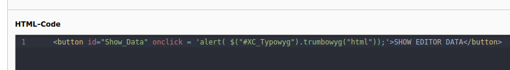
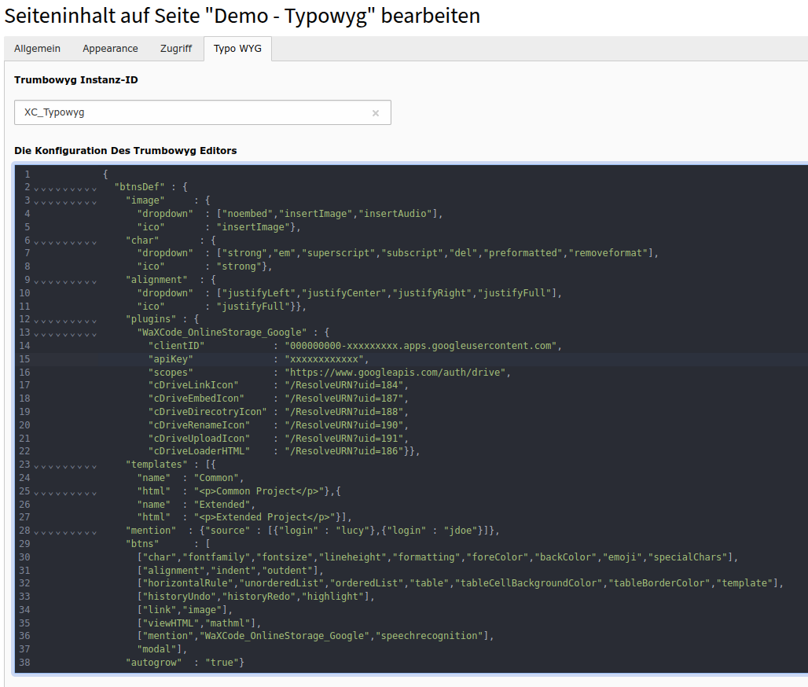
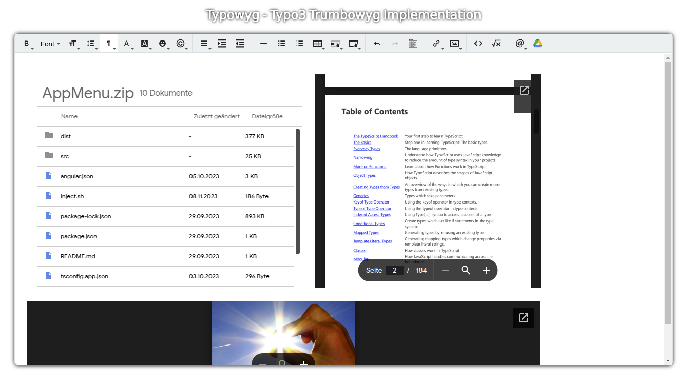

Was macht diese Extension?¶
Implementiert eine oder mehrere Instanzen des Trumbowyg Editors mit jeweils spezifischen IDs (hier klicken um eine Live Demo zu sehen).

Diese IDs werden genutzt um die jeweilige Editorinstanz anzusprechen und dessen Inhalt weiter zu verarbeiten.
Der Editor wird über eine entsprechende JSON angepasst wie in der Trumbowyg Dokumentation beschrieben.

Typowyg enthält zusätzlich auch ein Plugin welches es dem Nutzer erlaubt Dateien die auf seinem Google Drive liegen im Editor einzubetten oder zu verlinken.

Nachdem das Google Drive Icon geklickt wurde und der Nutzer sich eingeloggt hat poppt ein Dialogfeld mit einem Browser auf indem der Nutzer Verzeichnisse umbennen und erstellen oder auch Dateien hochladen kann bevor er die Datei zum einbetten oder verlinken auswählt.

Eingebetter Inhalt wird mittels der Google-Viewer angezeigt. Diese können z.B. Bilder vergrößern und auch in PDFs sowie in ZIP-Files navigieren.
Einen Text mit einem Inhalt auf dem eigenen Google Drive zu verlinken ist natürlich auch möglich.